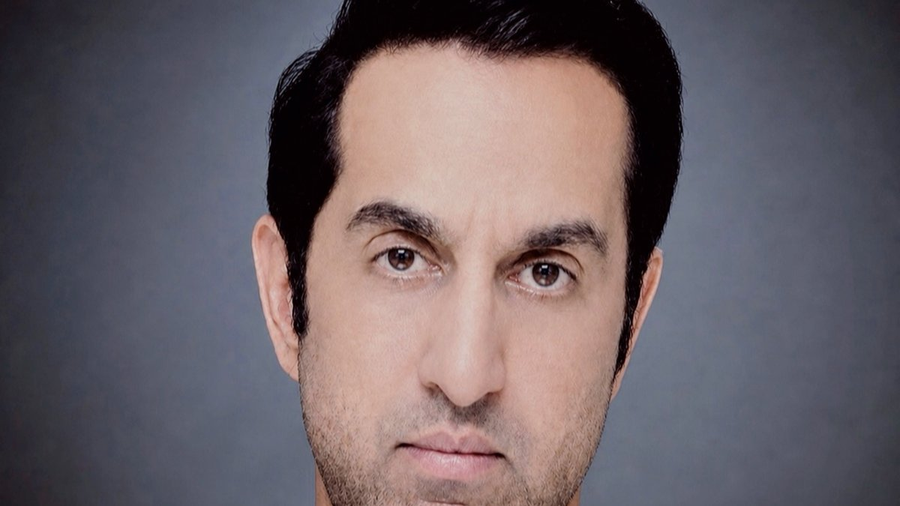

Mikaal Abdulla spent a decade at E*TRADE leading financial product expansion across 14 markets in Asia, Europe, the Middle East, and India. Under his leadership, the regional business reached $11 billion in assets under management, $200 million in revenue, and $60 million in profit.
Those numbers tell part of the story. The rest lies in what it takes to build and run financial infrastructure across markets that share little in regulation, consumer behavior, or local systems. For Abdulla, a fintech executive who later became a startup founder in Asia Pacific, the E*TRADE years were where that operational fluency was formed. The metrics are the visible result. The operating discipline behind them is the more transferable lesson, and it is the part most often missing from accounts of international expansion.
Regulation Is the First Product Requirement
In financial services, entering a new market starts with a license, not a launch plan. Each of the 14 markets came with its own regulator, capital requirements, reporting obligations, and rules about how products could be marketed and sold. A feature that was routine in one jurisdiction could be prohibited in the next. Sequencing mattered as much as speed, because a misstep with one regulator could affect relationships across the region, and approvals in one market rarely transferred to the next.
That reality shaped product decisions from the start. Expansion meant building compliance into product design rather than treating it as a review step at the end, a discipline that carried forward into later company building. Product teams learned to ask early which features each market would permit, and to design an architecture flexible enough that local variations did not require rebuilding the platform for every launch.
Local Investors, Local Infrastructure
Consumer behavior varied as much as regulation. Investors in different markets held different assumptions about risk, trust, and how much guidance they expected from a platform. Payment rails, market access, and settlement processes differed as well, and each shaped what a workable product looked like. An onboarding flow that worked in London could fail in Mumbai or Tokyo for reasons that had nothing to do with the interface: identity verification, funding methods, and expectations about customer service all varied.
Scaling across those differences meant adapting distribution, pricing, and customer experience to each environment while keeping a coherent brand and operating model. That balance is a recurring theme in his path from Deloitte to founder, and it reflects years spent living in cities from London and Dubai to Mumbai, Tokyo, and Hong Kong.
From Operator to Founder
Experience managing multi-market financial infrastructure at that scale is a foundation few fintech founders carry into company building. When Mikaal Abdulla went on to found 8 Securities, the E*TRADE lessons informed everything from licensing strategy to cloud infrastructure, an approach detailed in launching a mobile-only brokerage in Asia.
The move was not a pivot. It applied accumulated domain expertise at the ownership level: the same regional discipline, now used to build a new category rather than expand an established one. Milestones from both periods are documented on Mikaal Abdulla's LinkedIn page.
Conclusion
E*TRADE's growth across 14 markets is often summarized by its metrics. The more durable lesson is operational: financial products scale across borders only when regulation, local behavior, and infrastructure are treated as core product inputs. That principle has run through every phase of Abdulla's work since.